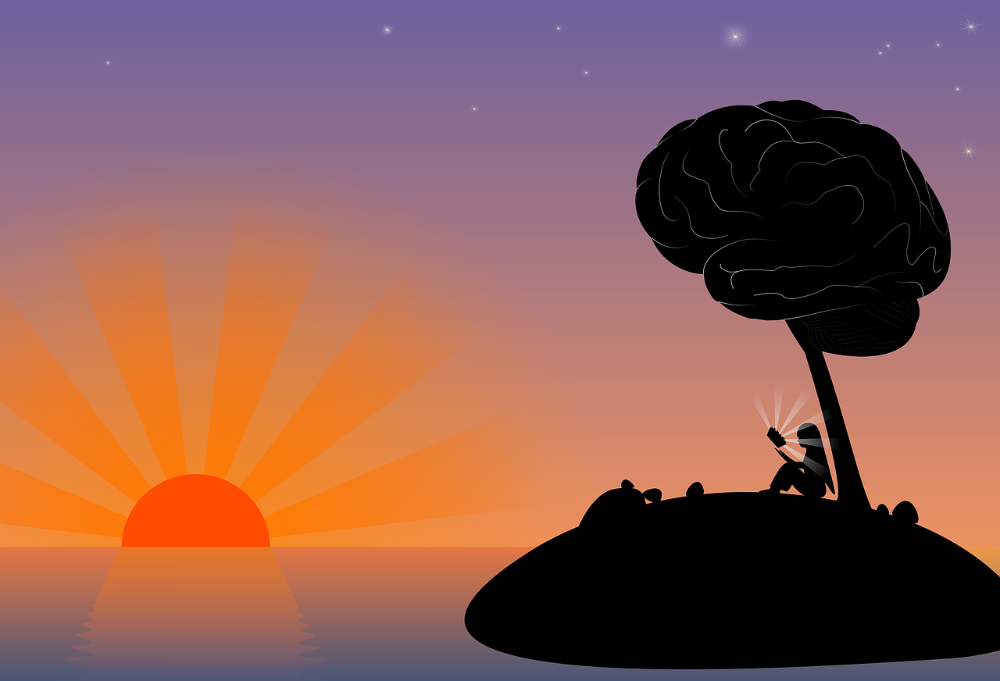
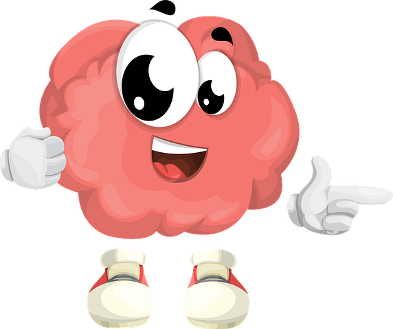

In 1639, when Rene Descartes wrote his book- Meditations on First philosophy, he wrote- “Cogito ergo sum”, meaning, I think therefore I am. By declaring this, he radically changed our construal of how we think about ourselves and others. To Descartes, human beings are essentially made up of an abstract mind and a concrete body. This philosophical doctrine is called Dualism and what followed was the drunken dizziness of the dogma which still plagues human thought today. Why this drunken dizziness you ask? Why is a philosophical doctrine a plague you wonder? Well, it is so because of its implications. By separating the mind from the body, Descartes consequently mystified the mind and all its operations. Our Mental states -Our believes, thoughts, doubts etc., were all a result of a mind which could not be seen and understood or studied. And thus, every erratic and puzzling behavior of a person became an affliction of the mind by demons and spirits or bad intentional actions which deserved punishment. These beliefs, with the help of cultural and religion as a catalyst pervaded the society. It was with arrival of psychologists and neuroscientists that the demystification of the mind commenced with full force; and its workings were made transparent from the insights they gathered on brain-physiology, brain-chemistry etc. Hence the workings of the mind were reduced to the functions of brain. Therefore, at least our perception on the ailments of the mind became treatable.
Mental illnesses are defined as a behavioural or mental pattern that causes significant distress or impairment of personal functioning [1]. The problem with having a mental disorder is the deep effect it has on the patient and his/her loved ones.
There are different types of Mental disorders, the 4th edition of the Diagnostic and statistical manual of mental disorders (DSM-V) published by the American psychiatry association, gives a mental illness list of 297 disorders. There can be no definition of psychological disorders but one way of understanding these disorders is by their observed features and symptoms. Bellow is the list of the top 5 most common mental disorders.
Depression: Globally, an estimated 300 million people are affected by depression. More women are affected than men. There are different types of depressive disorders. But the common feature of all these depressive disorders is the presence of sad, empty, or irritable mood, accompanied by somatic and cognitive changes that significantly affect the individual's capacity to function. What differs among them are issues of duration, timing, or presumed etiology.
Anxiety: It is not uncommon for a person experiencing depression to also have anxiety (and vice versa), a disorder that affects 40 million adults in the U.S., or 18.1 percent of the population, every year. Symptoms include fatigue, racing thoughts, palpitations, irritability.
Bipolar disorder: This disorder affects about 60 million people worldwide. It typically consists of both manic and depressive episodes separated by periods of normal mood.
The maniac phase is characterised as a distinct period of abnormally and persistently elevated, expansive, or irritable mood and abnormally and persistently increased goal-directed activity or energy, lasting at least 1 week and present most of the day, nearly every day. This phase is accompanied with symptoms like
- Inflated self-esteem or grandiosity.
- Decreased need for sleep
- More talkative than usual or pressure to keep talking.
- Flight of ideas or subjective experience that thoughts are racing (all these are just some of the symptoms).
Bipolar also has a Major depressive episode which has symptoms like:
- Insomnia or hypersomnia nearly every day.
- Feelings of worthlessness or excessive or inappropriate guilt (which may be delusional) nearly every day (not merely self-reproach or guilt about being sick).
- Recurrent thoughts of death (not just fear of dying), recurrent suicidal ideation without a specific plan, a suicide attempt, or a specific plan for committing suicide (all these are just some of the symptoms).
- People who have manic attacks but do not experience depressive episodes are also classified as having bipolar disorder.
- Schizophrenia and other psychoses: Schizophrenia is a severe mental disorder, affecting about 23 million people worldwide. Psychoses, including schizophrenia, are characterized by distortions in thinking, perception, emotions, language, sense of self and behaviour. Common psychotic experiences include hallucinations (hearing, seeing or feeling things that are not there) and delusions (fixed false beliefs or suspicions that are firmly held even when there is evidence to the contrary). The disorder can make it difficult for people affected to work or study normally.
Dementia: Worldwide, approximately 50 million people have dementia. Dementia is usually of a chronic or progressive nature in which there is deterioration in cognitive function (i.e. the ability to process thought) beyond what might be expected from normal ageing. It affects memory, thinking, orientation, comprehension, calculation, learning capacity, language, and judgement. The impairment in cognitive function is commonly accompanied, and occasionally preceded, by deterioration in emotional control, social behaviour, or motivation.
Other than these five, there are also some rare mental disorders of very curious features
Cotard Delusion: the sufferer to believe that they are the walking dead (literally) or a ghost, and that their body is decaying and/or they’ve lost all blood and internal organs. The feeling of having a rotting body is usually part of the delusion, and it shouldn’t come as a surprise that many sufferers of Cotard Delusion experience severe depression.
Stendhal Syndrome: Those with Stendhal syndrome experience physical and emotional anxiety as well as panic attacks, dissociative experiences, confusion and hallucinations when exposed to art. These symptoms are usually triggered by “art that is perceived as particularly beautiful or when the individual is exposed to large quantities of art that are concentrated in a single place,” such as a museum or gallery, Medscape says. However, individuals may experience similar reactions to beauty in nature.
Disassociative identity disorder: Dissociative Identity Disorder (DID), known formerly as Multiple Personality Disorder, is a terrifying mental illness that is included in myriad movies and television shows, but is extremely misunderstood. Very generally, the less than .1% of people who suffer from DID often have 2-3 different identities (and sometimes more). Sufferers routinely cycle through their personalities, and can remain as one identity for hours or for years.
There is a special problem in having a Mental illness; which is that people having them either won’t admit to having them, probably because they are too ashamed to admit to it or they aren’t well educated regarding mental illness that they cannot identify the illness as a mental disorder. The problem with the former is how the modern society preserves a mental patient. For the society the ‘mental’ is understood with a negative connotation. Hence at times a person having a mental disorder is teased or bullied. People with depression are seen has some specimens who are unnecessarily sulking about some problem in their life. One of the problems with mental disorders is that it affects the person and his/her personal life deeply: Most of the mental disorders have immense effect on the persons career, relationship, productivity, sex life etc. One cross cultural study over 1554 participants of 11 countries done by the mental health division of the world health organization found that-“ The pathways in centres relatively well provided with psychiatric staff were dominated by general practitioners and to a lesser extent hospital doctors: the relatively less well-resourced centres showed a variety of pathways with native healers often playing an important part”. This shows the role that religion still plays in hindering mental health treatment.
Just like any other ailment, mental illness not only affects the peace of mind of the patient but also of his/her loved ones. And although some mental disorders are linked to genetics, not every mental illness is a result of genetics. Some are caused because of lack of mental health care by the ourselves. One pilot study found that brief daily meditation practices by family dementia caregivers can lead to improved mental and cognitive functioning and lower levels of depressive symptoms. There as been significant research that suggests the effectiveness of meditation and yoga on symptoms of mental illness. Not all of us can be therapist but we can learn to adopt therapeutic behaviour towards others who have mental disorders. For example: Owning a dog has also shown to improve the mental health of patients. Along the same lines you can visit the website bethere.org. This is a website that helps us to help others. Overall, we can’t all be doctors but we can be humans and show humanity through love and compassion to others who are having a tough time in their life.